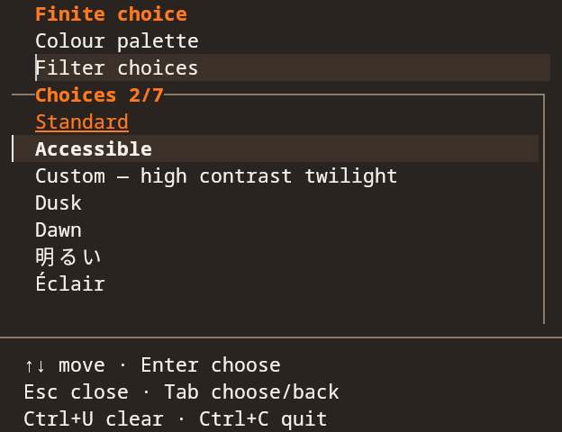
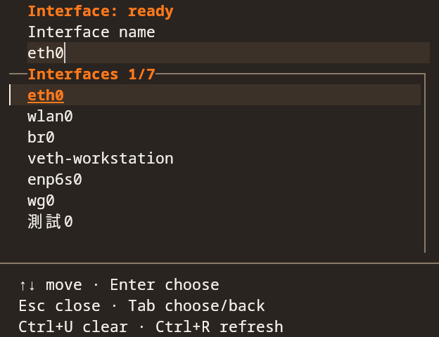
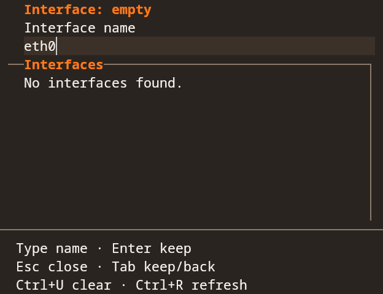
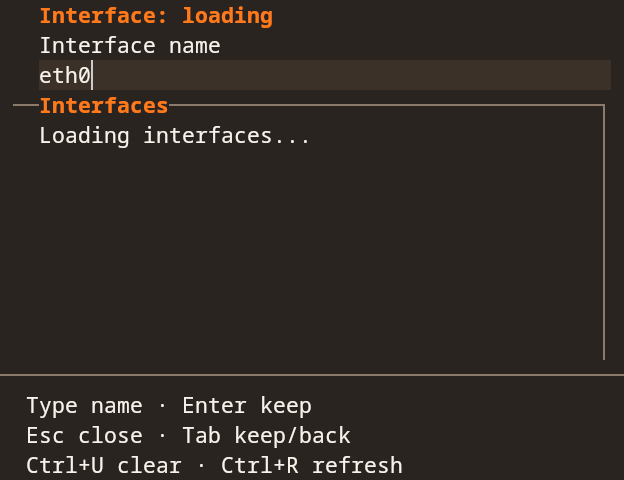
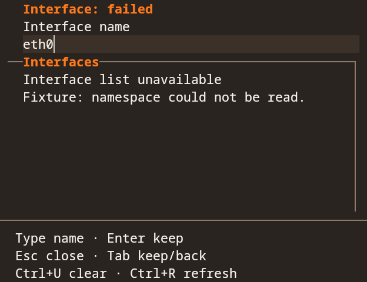
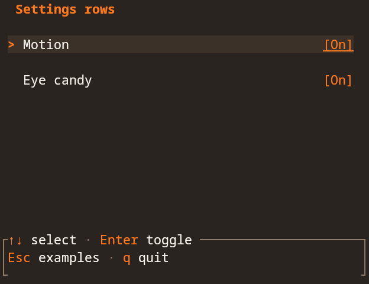

Design library
TUI components
Shared Rust components for Ratatui.
Run the interactive gallery
From the design repository root:
cargo run --locked --manifest-path tui/Cargo.toml --example galleryChoose an example with the arrow keys and Enter. Space pauses animations; Esc returns to the examples. Ctrl+C quits.
Activity indicators
A busy spinner, cycling dots, and a travelling pulse for pending work.
Rust
animation::spinner(tick, motion);
animation::dots(tick, motion);
animation::pulse(20, tick, motion);Searchable dropdown
Finite choices and editable names.
Finite choices
Move, filter, choose, and cancel.


Editable names
Filter suggestions or enter a name.


Empty
Enter a name, then refresh the choices.


Loading
Refresh the list and choose an interface.


Lookup failed
Keep the draft while retrying the lookup.


Use the shared widget
Import netfyr_tui_design::dropdown from the crate in tui/. Pass prepared options and styles to dropdown::draw; your application owns filtering, keyboard input, and lookups.
The crate's tui/README.md and tui/dropdown.md document the API and usage rules.
Flame
Rust
flame::frame(tick, motion);Glyphs
The font's flame and separators, with standard-character fallbacks.
Rust
Install the symbols font, then run the gallery with --fixture glyphs --glyphs netfyr. Supporting terminals keep your text font and use fallback for the symbols. Standard characters remain available.
use netfyr_tui_design::glyphs::{Glyph, GlyphSet};
let glyphs = GlyphSet::Netfyr;
let mark = glyphs.character(Glyph::Flame);
let separator = glyphs.character(Glyph::RightOutline);Settings row


Rust
setting_row::draw(frame, area, row, style);
setting_row::toggle_value(enabled);Trace replay
A replay of measured round-trip time. Unknown timings stay unknown.
Rust
lanes::replay(width, Some(rtt_ms), tick, motion);Traffic lanes
Higher transfer rates move faster on a logarithmic scale. Idle stays still.
Rust
lanes::traffic(width, direction, active, motion, phase);